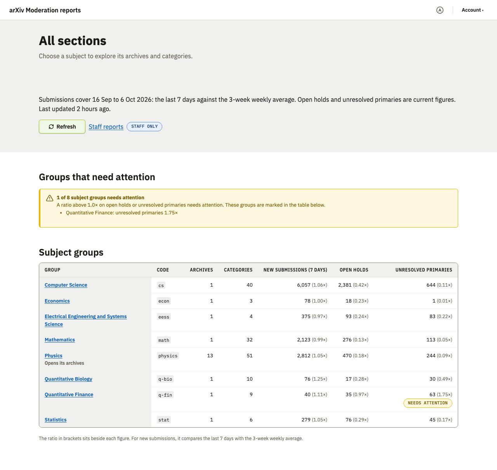
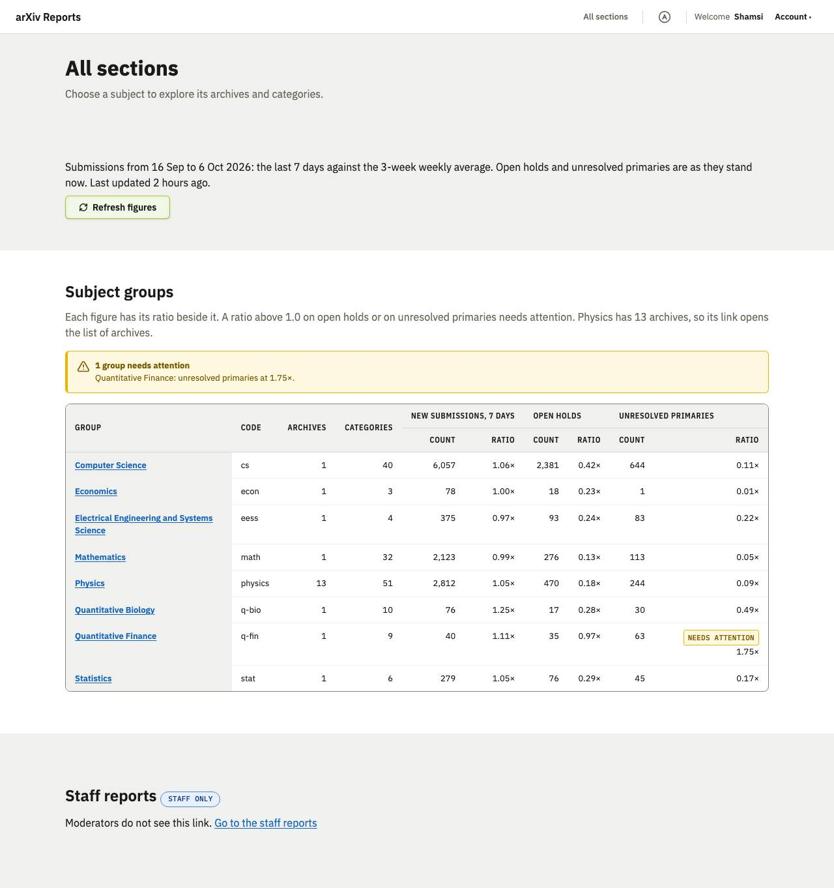
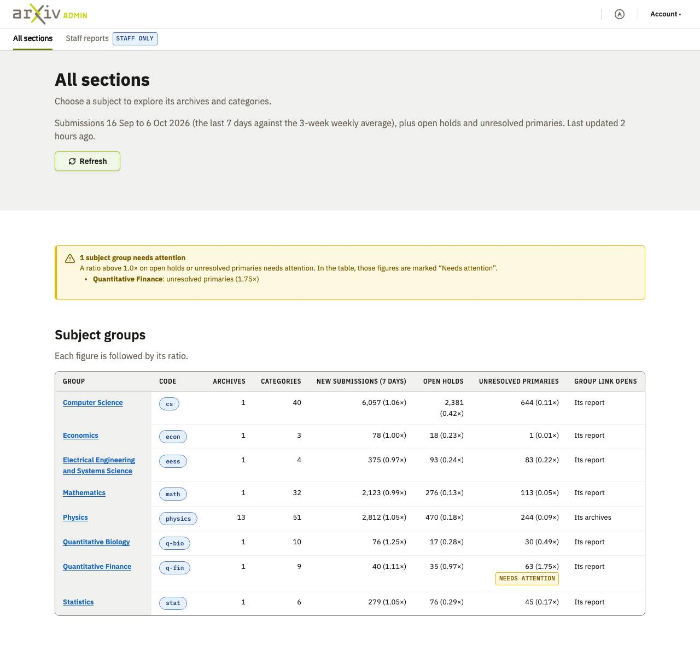
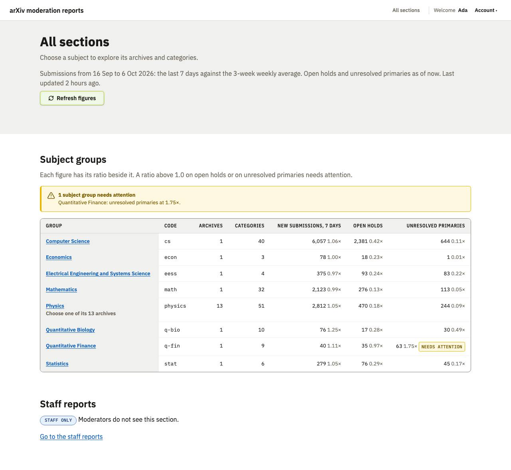

Moderation and staff reports, round 2
2026-10-08 · design system at commit 70c39ab · the spec
Result
Shamsi accepted all four with changes, against four rejections in round 4. Every build used cards that link on the two doorway pages, the secondary navigation with a compact filter bar, the views as a second row, and placeholders for the figures; no build used the light header. Every automated check passed. What is left is hierarchy: status lines, explanations, category lists and filters still push the main content down, and no build reviewed its layout for that. Two builds used the public logo on an internal tool, and one used a page zone on these dense pages.
Builds
| Build A | Build B | Build C | Build D | |
|---|---|---|---|---|
| Model | claude-sonnet-5-5 | claude-opus-5-5 | claude-opus-5-5 | claude-sonnet-5-5 |
| Pages |  All sections (phone, dark) All sections (phone, dark)Activity charts (phone, dark) Recent submissions (phone, dark) Staff reports (phone, dark) |  All sections (phone, dark) All sections (phone, dark)Activity charts (phone, dark) Recent submissions (phone, dark) Staff reports (phone, dark) |  All sections (phone, dark) All sections (phone, dark)Activity charts (phone, dark) Recent submissions (phone, dark) Staff reports (phone, dark) |  All sections (phone, dark) All sections (phone, dark)Activity charts (phone, dark) Recent submissions (phone, dark) Staff reports (phone, dark) |
| Shamsi: verdict | Accept with changes | Accept with changes | Accept with changes | Accept with changes |
| Shamsi: what is off | ReadALL SECTIONS: - logo in header is correct, that is good. - header includes dark mode toggle, excellent. - page zones are being used, which we decided is not appropriate for dense pages like admin tools, so that is incorrect. - use of cards to organize the sections is good. - staff reports is already in the header nav, then is duplicated lower down on the page. It also duplicates the same words in the heading and in the link below it, which is wasteful. - The cards look a little too plain and could use a redesign pass. Perhaps a variant with a top border in the primary or accent color, for when cards are the prominent content. ACTIVITY CHARTS: - I approve of the use of the secondary nav and the compact filter bar just below the header. - I think the main heading of the page should reflect which subnav the user selected, as well as the filters. So instead of just "computer science" the heading might be "Submissions and holds, All CS" or, with other filters and nan selection it might read "Moderators, cs.DC". This way the heading reflects the user choices and follows their order. - The sort bar is somewhat confusing to me as a user. It has two filter bars and then an apply button, but that is not the expected behavior of sort options. The live site uses a simple button bar and each button toggles that sort immediately. RECENT SUBMISSIONS: - The organization on this page looks pretty good. - I appreciate the more compact date selector. It could be even more compact though, because it is allowing the date picker fields to use up all available width when they do not need that much. it looks odd and I think goes against the design guidelines for form field widths. - The live site includes the option for the user to select to "use these dates for all tabs". This comment applies to all of the options. - When it comes to the pagination at the top and bottom of the table, I think we need a rule that we only need it in both locations when the table goes beyond X number of rows (maybe 25?). When table rows are less than that we only need pagination at the bottom of the table. - The placeholder content that says "Figures: five totals for 16 Sep to 6 Oct 2026" is confusing because it switches to not using a dashed outline and has no top margin. STAFF REPORTS: - this page also uses page zones, which is not appropriate for these admin tools. Even though this page is lighter I think that the same look and feel should be maintained across all of the pages. It does not look right to insert page zones on just a few pages. | ReadMany comments from build A apply, and also these notes: ALL SECTIONS: - the header uses the main arXiv logo, not the internal admin logo. I think this counts as a mistake. Perhaps the DS needs to make it clearer that internal pages use internal logos. - the placeholder content is a bit confusing and I thought we had suggested a specific placeholder statement like "data visualizations will go here" or something similar. ACTIVITY CHARTS: - The list of categories is too prominent. It could go at the bottom with the rest of the long description. - It is missing the heading "Recent Moderator Activity" - There is only one sort option on this page. The live version has 4. Also, same comments as for Build A about the sort affordance. RECENT SUBMISSIONS: - The date selection bar takes up much to much space. The version in build A was much more compact. STAFF REPORTS: - the text "choose a report" is not necessary. The options on the page are obvious to users. This is a place where we could put a sentence explaining this page is not available to moderators, which would at least convey useful information. But that is optional. | Readmany of the comments from the other builds apply, and also these notes: ACTIVITY CHARTS: - Interesting use of an accordion for all the descriptive information. It is not wrong or right compared to putting the info at the bottom and this build and build B offer the dev two reasonable ways of dealing with that info. - The heading "activity charts" duplicates the tab. The live site uses teh heading "Recent Moderator Activity". - The placeholder content is well represented in this build with clear, short descriptions of what each block is intended to hold. - The live site has four sort options, this build only offers one. | ReadMany comments from previous builds apply, plus these notes: ALL SECTIONS: - it used the right logo (admin logo). - It included the dark mode toggle in the header. - "About these figures" at the bottom does not need to use an accordion for two reasons: 1) the information being hidden is just one line and does not justify use of an accordion. 2) because we are already practically at the bottom of the page so the info is not displacing other content. ACTIVITY CHARTS: - The filter bar is more compact on this page than build C, but still not as compact as on the live site. Ask me for a screenshot of what that live page is using after you complete your review and we'll assess it together. Maybe a standalone sort bar is an affordance the DS is missing. - The actual charts are pushed down too far on the page by everything above them. RECENT SUBMISSIONS: - The use of a info note element is interesting. But like with the previous page, all of this info pushes teh main charts down too far on the page. A sidebar would have been an interesting element to think about using, because it allows for main content to rise up higher alongside other info or affordances. Maybe we did not make the goal of primary content being high up on the page clear enough to the agents. And perhaps that prioritization needs to be made clear in the DS too. |
| Claude: technical verdict | Conformant, with issues | Conformant, with issues | Conformant, with issues | Conformant |
| Claude: technical notes | ReadNo page CSS. Uses page zones on two pages, against the rule that dense pages do not. | ReadSix rules on tokens (placeholder, IDs in mono, a link row). The public logo on an internal tool. | ReadThirteen rules on tokens, including its own stack spacing utilities; one class used with no rule. The public logo on an internal tool. | ReadSix rules on tokens (placeholder, status row, category list). Admin logo, standard header. |
| Cost | $1.48 · 5 min · 6 files read | $3.13 · 6 min · 7 files read | $2.69 · 9 min · 6 files read | $1.18 · 6 min · 8 files read |


Last round: Moderation and staff reports
 Build A: Reject |  Build B: Reject |  Build C: Reject |  Build D: Reject |
Shamsi: notes after seeing them together
I would like to see agents do a review pass of any layout and think carefully about what the primary content is and wether it can be displayed higher on the page. This would mean evaluating all the content for hierarchy again, and also evaluating which DS elements and affordances where used, and if the best choices were made in both cases. What are your thoughts?
What the builds had in common
- All four: .ds-card--link on both doorway pages, .ds-subnav with a compact filter bar, .ds-subnav--in-page for the views, placeholders, the standard header. None used the light header.
- Three of four wrote their own placeholder style; each looked different.
- None reviewed the page for what is primary; descriptions, status lines and category lists sit above the main content in all four.
- Sort for the activity charts was a filter-style select with Apply in all four; the live site uses buttons that sort at once.
- Predictions: 1 right (all four used cards that link). 2 right (all four put the filters in the navigation bar). 3 wrong (no build used the light header).
What we changed in the design system
Not written yet.